2. Environment Set Up
We need to deploy a few services and configure our AWS environment before we can get started.
We will need to complete the following set up steps
- Create an OpenSearch Domain
- Create an IAM Role
- Map IAM Role to OpenSearch Role
- Deploy Glue Jobs to Generate CloudWatch Logs
Follow the instructions below for each step
Create an OpenSearch Domain
- Go to the OpenSearch Console
- Click on Create domain

- Enter the name
workshop-domainfor the OpenSearch Domain - Under the deployment type section, select
Development and testing - Under the network section, select
Public access - Under the fine-grained access control section select
Create master user - Enter and username and password. Copy down the user name and password. We will need these later in the workshop
- Leave all other settings at the default selections
- Click on Create
It will take approximately 5 - 10 minutes for your OpenSearch domain to be created. Upon successful creation you will see your OpenSearch domain status is active

Do not proceed to the next step until you confirm that your domain status is active
Create an IAM Role
- Go to the IAM Console
- Click on Roles
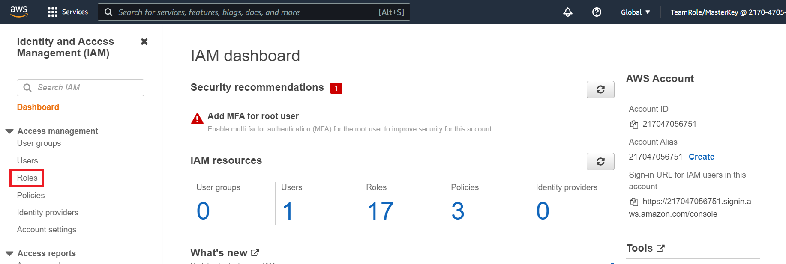
- Click on Create role
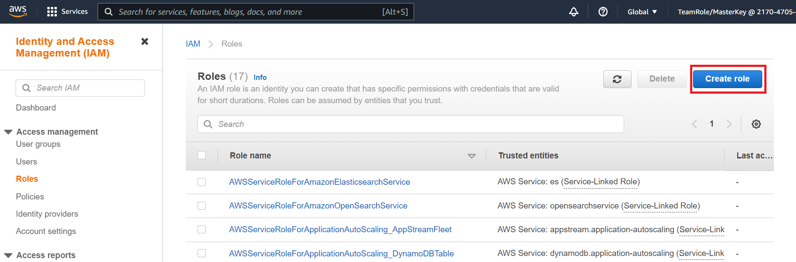
- Under the choose a use case click on Lambda and then click on Next:Permissions

- Search for
AdministratorAccessand click on the box next to the AdministratorAccess policies
Note for the purposes of this workshop we will give the IAM role AdministratorAccess. In a production environment you should scope down the permissions given to the IAM role
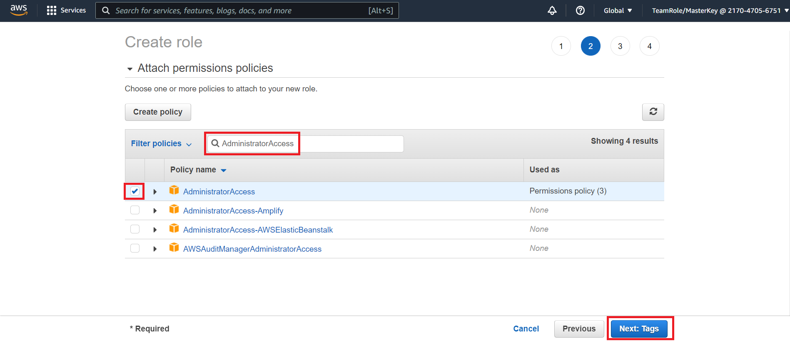
- Click on Next: Tags
- Click on Next: Review . There is no need to change anything on the Add tags page
- Name the role
workshop-role - Click on Create role
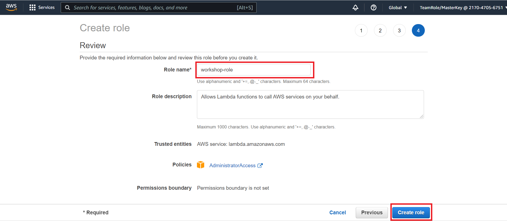
- Back on the IAM Roles page search for and select the
workshop-roleyou just created

- On the summary page copy down the Role ARN. We will need this later in the workshop
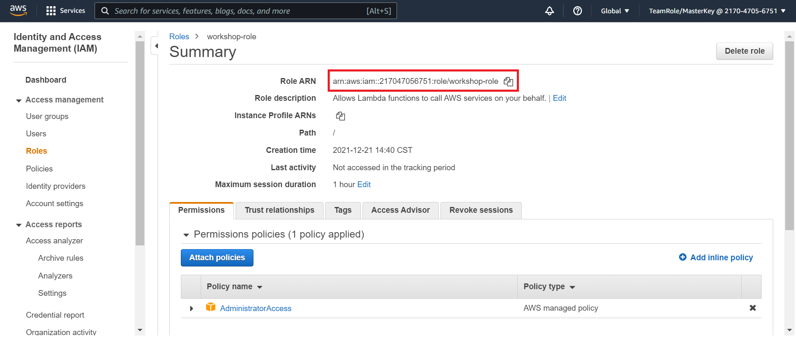
- Click on the Trust relationships tab
- Click on the Edit trust relationship

- Replace the service section of the JSON with the following
"Service": [
"lambda.amazonaws.com",
"glue.amazonaws.com"
]
Your trust relationship policy document should look like the following
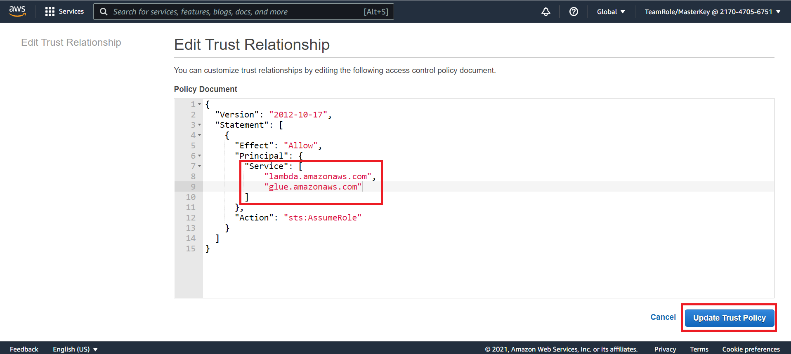
- Click on Update Trust Policy
Map IAM Role to OpenSearch Role
- Go to the OpenSearch Console
- Click on the workshop-domain OpenSearch domain you created earlier
- Click on the OpenSearch Dashboard URL. This should open the URL in a web browser window

- You will be prompted to log in. Using the user name and password you created during the OpenSearch deployment, log in
- If an additional pop up window is present after login asking about data upload click on Explore on my own
- If an additional pop up windows is present asking you to select your tenant select Global and click on Confirm
You should now see a window that looks like this

- Click on and expand the hamburger menu on the side bar of the OpenSearch home page
- Under the OpenSearch Plugins section click on Security

- On the security page click on Roles from the left hand menu

- On the roles page search for and click on
all_access

- On the all_access role page click on Mapped users
- Under the mapped users page click on Manage mapping

- Under the backend roles section enter the ARN that you copied down earlier for the IAM workshop-role that you created
- Click on Map
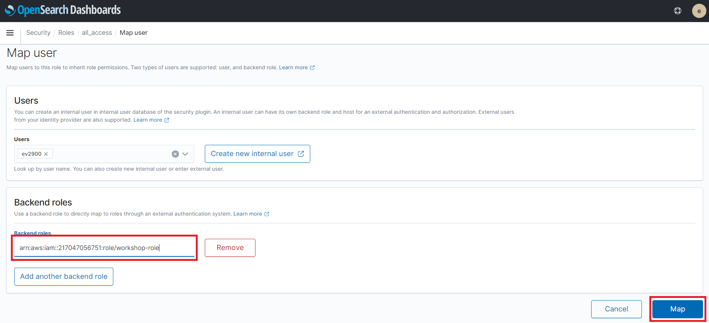
Deploy Glue Jobs to Generate CloudWatch Logs
CloudWatch provides log collection for AWS services. In order to generate logs that we can use in this workshop we will create two simple AWS Glue Jobs. We can run these jobs to produce logs. Subsequently we can analyze these logs in OpenSearch
- Go to the Glue Console
- On the left hand menu click on Jobs

- On the jobs page click on Add job
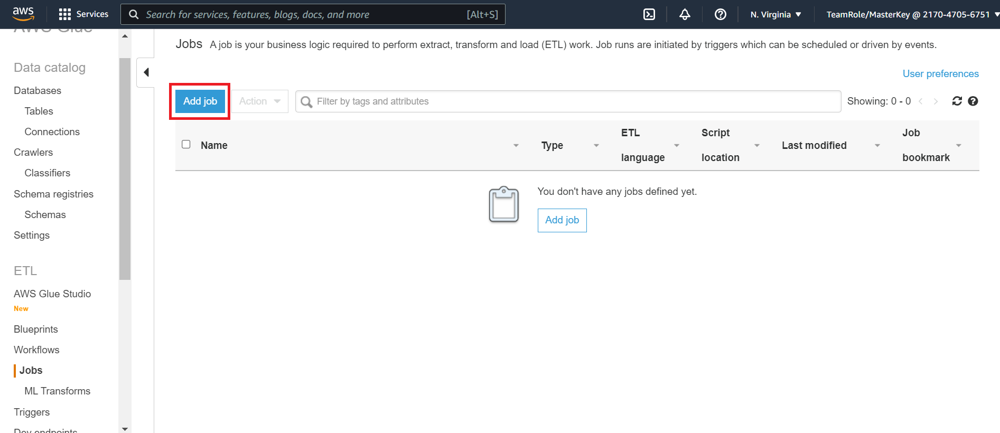
- Enter
glue_job_successfor the name of the job - For the IAM tole select workshop-role
- Under the this job run section select A new script to be authored by you
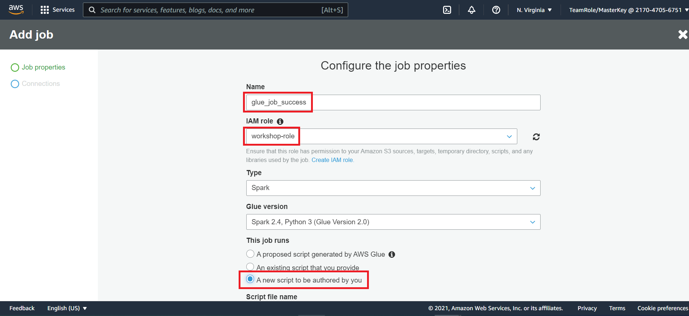
- Under the monitoring options click on Job metrics and Continuous logging

- Under the security configuration, script libraries, and job parameters (optional) set the max concurrency to
10
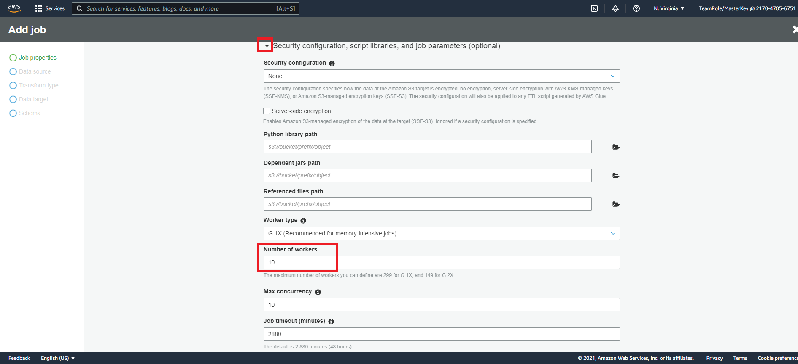
-
Leave all other settings at the default selections and click on Next at the bottom of the page
-
On the connections page leave all of the setting at the defaults and click on Save job and edit script
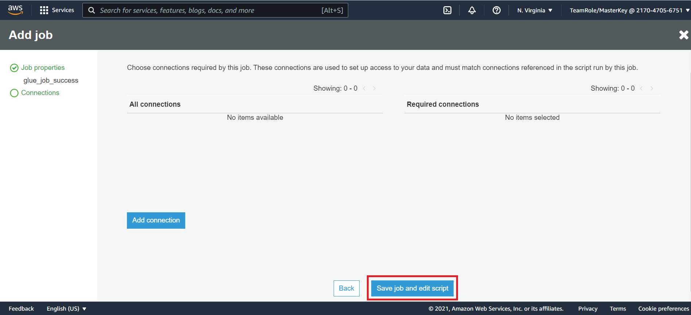
- In the edit job window copy and paste the following code into the editing window
from awsglue.context import GlueContext
from pyspark.context import SparkContext
sc = SparkContext()
glueContext = GlueContext(sc)
logger = glueContext.get_logger()
logger.error("Success!!")
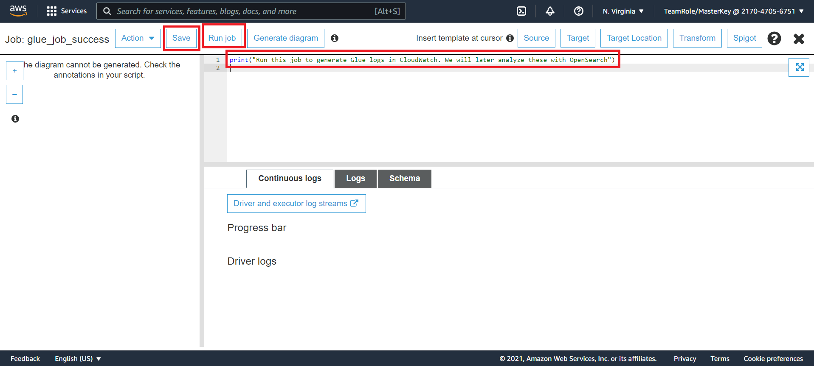
- Click on Save
- Click on Run
- Repeat steps 1 - 13 again. However this time name the Glue job
glue_job_errorand use the following code in the job
from awsglue.context import GlueContext
from pyspark.context import SparkContext
sc = SparkContext()
glueContext = GlueContext(sc)
logger = glueContext.get_logger()
logger.error("Error!!")
The jobs will use the logger in AWS Glue to produce custom error log message Success!! and Error!!. Later in this workshop we will search for the log message in OpenSearch.
You have completed the set up for your AWS environment! When you are ready lets begin the next step Send Log Data to OpenSearch